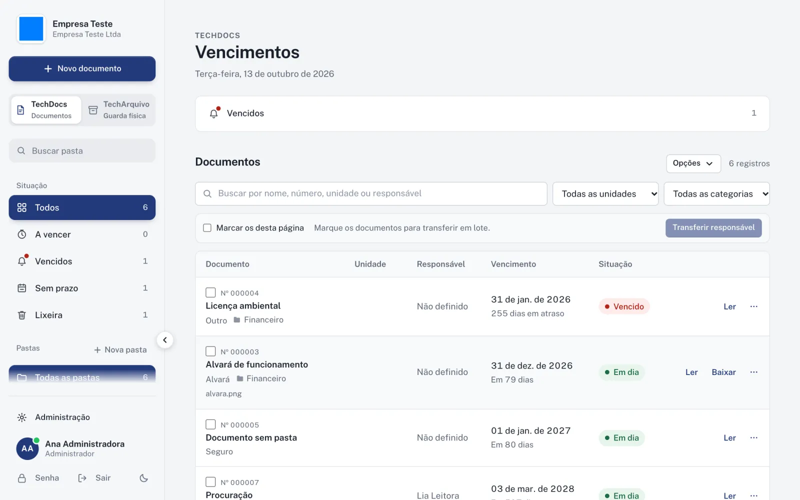
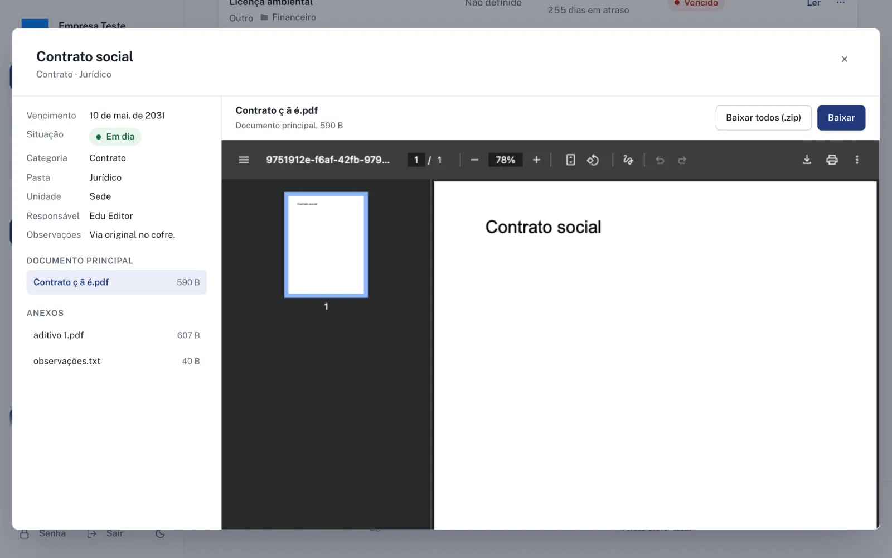
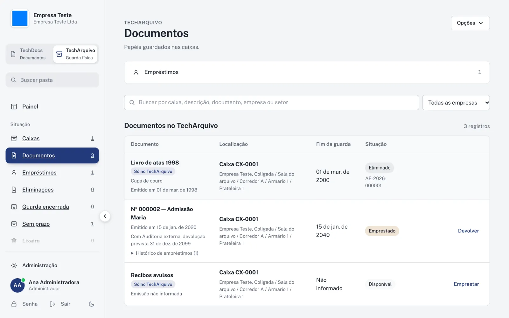
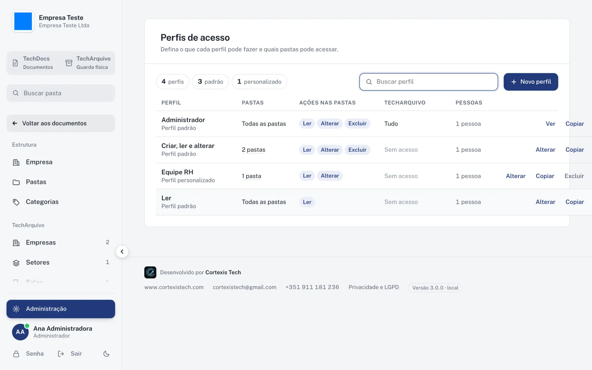
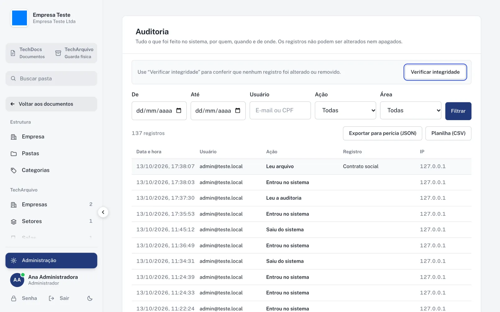
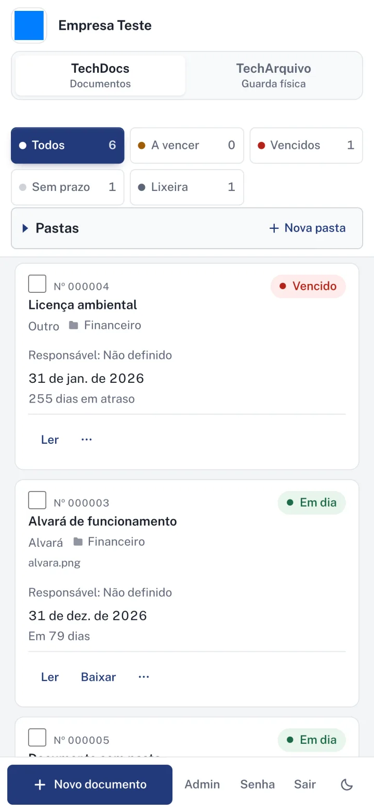

Nenhum prazo vence no escuro.
Alvarás, certidões, licenças, contratos e seguros com vencimento, responsável, unidade e pasta. O sistema avisa antes de vencer e guarda os arquivos com histórico completo.
Produto próprio
Os documentos da empresa e o arquivo de papel no mesmo sistema. O TechDocs cuida dos prazos e dos arquivos digitais; o TechArquivo sabe em que caixa, prateleira e sala cada papel está guardado.

Dois módulos, um só acesso
Alvarás, certidões, licenças, contratos e seguros com vencimento, responsável, unidade e pasta. O sistema avisa antes de vencer e guarda os arquivos com histórico completo.
Empresa, sala, corredor, armário, prateleira e caixa. Empréstimos, prazos de guarda e eliminação com aprovação, ligados ao documento digital quando ele existe.
TechDocs

TechArquivo

Segurança e governança


Ler, alterar e excluir definidos pasta a pasta em cada perfil. A regra é conferida no banco de dados, não só na tela.
Cada ação fica registrada com usuário, data, IP e o antes e depois. Os registros são encadeados por hash e não podem ser apagados.
Cada arquivo recebe um SHA-256 no envio. A conferência aponta qualquer arquivo trocado depois.
Cópia completa toda madrugada, com 30 dias de histórico, download em .zip e restauração pela própria tela.
CNPJ validado, inclusive no novo formato alfanumérico, e documentos filtrados por unidade.
Hospedado no Google Cloud, com política de privacidade própria e lixeira de 30 dias para o que for excluído.
No celular
Consultar um prazo, abrir um PDF ou ver onde um papel está guardado funciona no Android, no iPhone e no iPad, com o arquivo em tela cheia.

Filme
A gente mostra o Cortexis Ops com a sede, as filiais, os prazos e o arquivo de vocês.